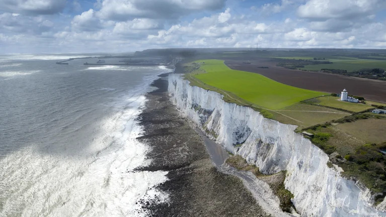
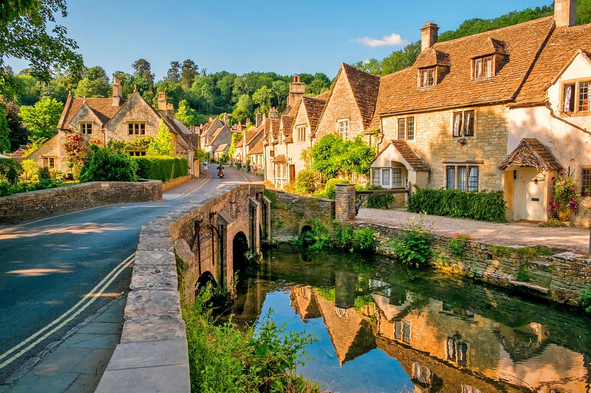

CHAPTER 03
The Romantic Countryside
The breathtaking, romantic landscapes, dramatic cliffs, and honey-colored villages of rural England.

The Lake District
A sweeping national park celebrated for its glacial ribbon lakes, rugged mountains, and deep literary history with Wordsworth and Beatrix Potter.

White Cliffs of Dover
Striking, pure-white chalk cliff faces overlooking the English Channel, standing for centuries as an emotional symbol of wartime defense and hope.

The Cotswolds
The epitome of rural charm. Rolling hills punctuated by sleepy, fairytale villages built entirely from beautiful, golden Cotswold stone.